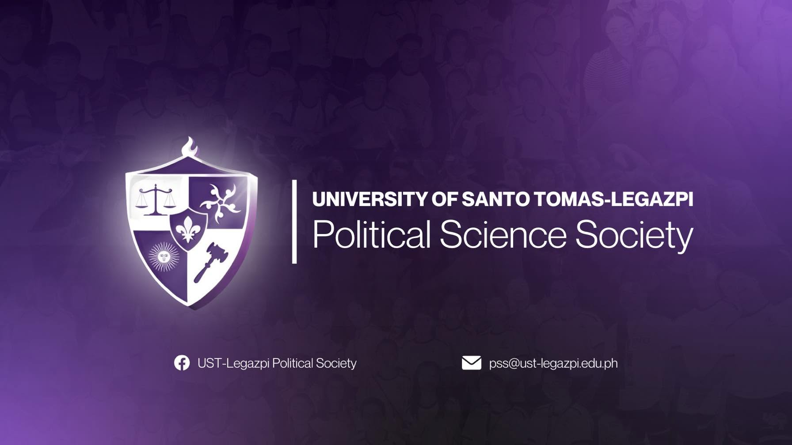
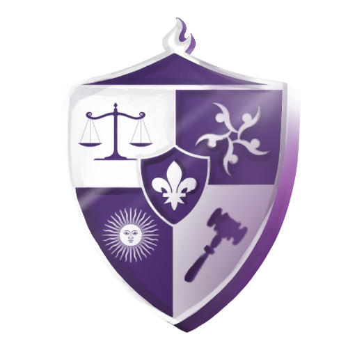

About

Learn about the Political Science Society, its mission, vision, and commitment to academic excellence.
Learn about the Political Science Society, its mission, vision, and commitment to academic excellence.

The Political Science Society (PSS) is the official student organization of the Political Science Program at UST-Legazpi. It serves as a community for students who are passionate about leadership, public service, civic engagement, governance, and social responsibility.
The Bachelor of Arts in Political Science is an academic program that studies government, politics, law, public administration, political behavior, international relations, and public policy. It helps students understand how societies are governed and how citizens can participate meaningfully in democratic life.
The CASE Department develops students to become critical thinkers, responsible leaders, and socially aware individuals through quality education, meaningful activities, and community-centered learning.
The UST-Legazpi Political Science Society is the recognized student organization representing the Bachelor of Arts in Political Science program under the College of Arts, Sciences, and Education (CASE) of University of Santo Tomas-Legazpi. Established as a student-led academic and socio-civic organization, the society embodies the institution’s commitment to civic engagement, political awareness, leadership formation, and social responsibility among aspiring political scientists.
Originally affiliated with the Philosophy program during its early years, the organization later attained independent recognition around 2010 as the Political Science program steadily expanded within the university. This transition marked a significant milestone in strengthening the identity and representation of Political Science students within the academic community. Throughout the years, the organization has served as a dynamic platform for intellectual discourse and meaningful involvement. It actively encourages its members to participate in discussions concerning governance, public policy, social issues, and nation building while nurturing leadership rooted in Thomasian values.
Following the challenges brought by the global pandemic, the organization experienced a period of revitalization and renewed engagement. Through the dedication of its student leaders and members, the society gradually regained its active presence in both academic and extracurricular initiatives, strengthening camaraderie and student participation within the Political Science community.

🧑⚖️ The Gavel — representing authority and justice; core values in the tenet of decisive and responsible leadership for the welfare of all.
⚖️ The Scale of Justice — the element of fairness in discourse; the very essence of human impartiality and the quality of seeking the truth with genuine integrity.
👥 The Social Circle — the symbol of unity and collaboration for all in achieving the shared goals of the people for the common good.
⚜️ The Fleur-de-lis — the emblem of purity and genuine faith; testaments to the pursuit of wisdom alongside purposeful and moral action.
🌞 The Blazing Sun — a symbol of homage to our patron Saint Thomas Aquinas, that we may continue to see his vision of illuminating truth with knowledge amidst darkness and uncertainty.
🔥 The Mayon Volcano — the raging element and symbol of the pride, commitment, and culture of the Bikolano identity and community; a reminder of our roots and heritage so that we may continue to uplift them towards the future.
The UST-Legazpi Political Science Society (PSS) is the official program-based organization of the Political Science program in UST-Legazpi. The organization serves as the primary representative body of Political Science students and plays a vital role in promoting student participation, leadership, and holistic development within the academic community.
The organization aims to contribute to the development of the University through meaningful student action and active involvement in academic and socio-civic initiatives. It serves as the voice of Political Science students with regard to their concerns, interests, and sentiments, while upholding the ideals of justice, equality, fairness, and due process.
Furthermore, the organization seeks to hone leadership among Political Science students by pursuing dynamic programs and activities that enhance their skills, talents, and social awareness. It also encourages cooperation, unity, and understanding among members in pursuit of the organization’s goals and objectives.
The Political Science Society also aims to strengthen ties among Political Science students and other sectors of the academic community in achieving general welfare. Through various cause-oriented activities and student-led initiatives, the organization encourages students to participate actively in community engagement and advocacy, creating avenues for collaboration, resource sharing, and meaningful social involvement.
To cultivate socially responsible, competent, and principled future leaders committed to democratic governance, justice, and public service.
Stay connected with the Political Science Society through our official Facebook page for announcements, activities, updates, and student organization events.
Visit Facebook PageFor official inquiries, partnerships, academic collaborations, or organization-related concerns, you may contact the Political Science Society through our official PSS email for prompt assistance and correspondence.
Contact UsLearn more about the student leaders who serve the Political Science Society.
View OfficersToday, the UST-Legazpi Political Science Society continues to strengthen its leadership and student engagement through internal and external activities that promote participation and collaboration. The organization also builds connections with Political Science organizations across the Bicol Region and the Philippines, encouraging partnership and shared initiatives among students and future public servants.